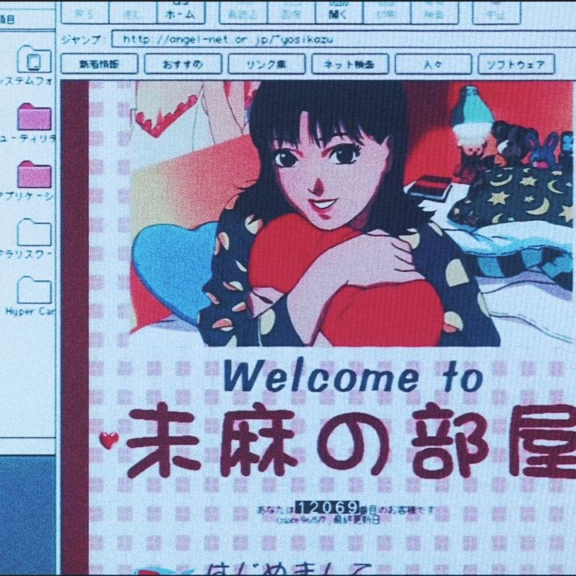

Mathematics is not only about numbers and solving equations but also about recognizing patterns that can be found in our everyday surroundings. Patterns appear in different forms, like nature, buildings and architecture. Some of these patterns often follow mathematical rules involving repetition, symmetry, and geometric transformations. By studying mathematics as a science of patterns, we can better understand how mathematical concepts are present in the world around us. A website may make this idea easier to visualize and explore.
As such, Patterns in the Modern World aims to create an interactive site that showcases different mathematical patterns found in various places and everyday surroundings. In the photo gallery, there are original photographs taken by contributors in different locations, showcasing patterns found in our surroundings. Each photograph will have a short description explaining the mathematical concepts and geometric transformations present, such as translation, reflection, rotation, and dilation. Aside from the gallery, there is also the basic pattern generator that lets users apply various geometric transformations to simple shapes to create their own patterns.